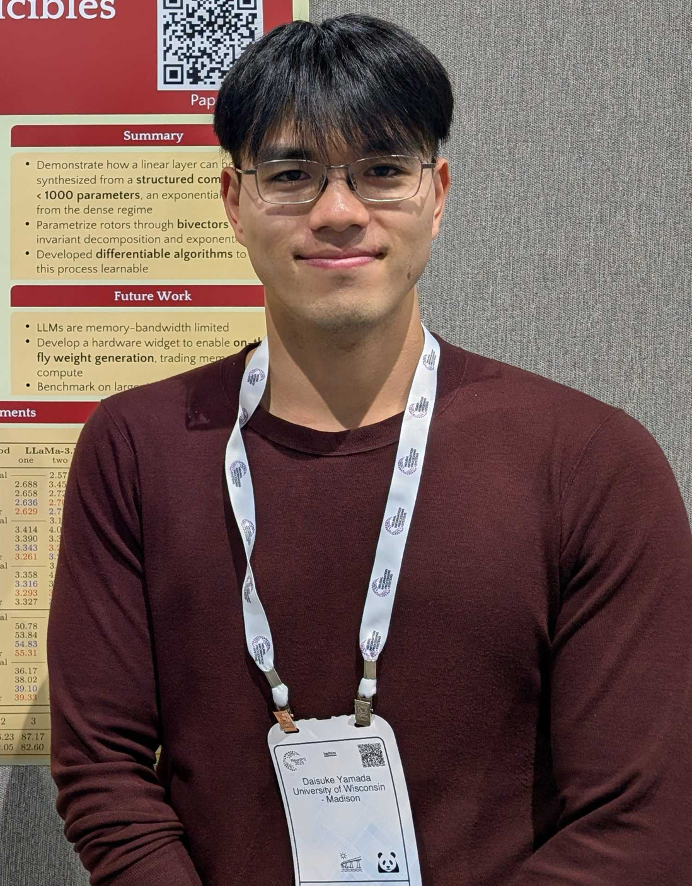

PhD in CS, UW–Madison · 山田大介

I'm a 3rd year PhD student in Computer Science at the University of Wisconsin–Madison, working with Professor Vikas Singh. I graduated from Carleton College with degrees in Mathematics and Computer Science.
My research is in machine learning, where I aim to develop mathematical foundations for more efficient and reliable AI systems. A recurring theme in my work is exploiting structure: both the geometric and algebraic structure underlying how models represent and compose information, and external structure, such as hierarchies, present in the data itself. I'm interested in how making this structure explicit can lead to more compact, efficient, and interpretable methods in ML.
I'm from Japan. Outside of research, I listen to piano. I also travel often and studied abroad at DIS in Copenhagen, Denmark and Budapest Semesters in Mathematics (BSM) in Hungary.
email ·
GitHub ·
LinkedIn
Always happy to chat about research or potential collaborations.
2026
2025
2024
2023